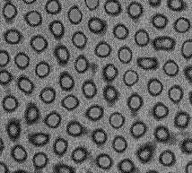
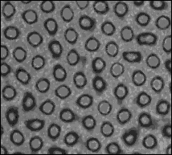

USAGE: medfltr inimg outimg [-s FLTRSIZE] [-L]
medfltr performs median filtering upon image
using filter window of chosen size.
ARGUMENTS:
inimg: input image filename (TIF)
outimg: output image filename (TIF)
OPTIONS:
-s FLTR_SIZE: filter size; the larger the size,
the greater the degree of smoothing;
the size must be odd. (Default = 3)
-L: print Software License for this module
Example:
medfltr decC.tif decCM.tif -s 3
decC.tif:

decCM.tif:

Copyright (C) 1999 MLMSoftware Group, LLC.